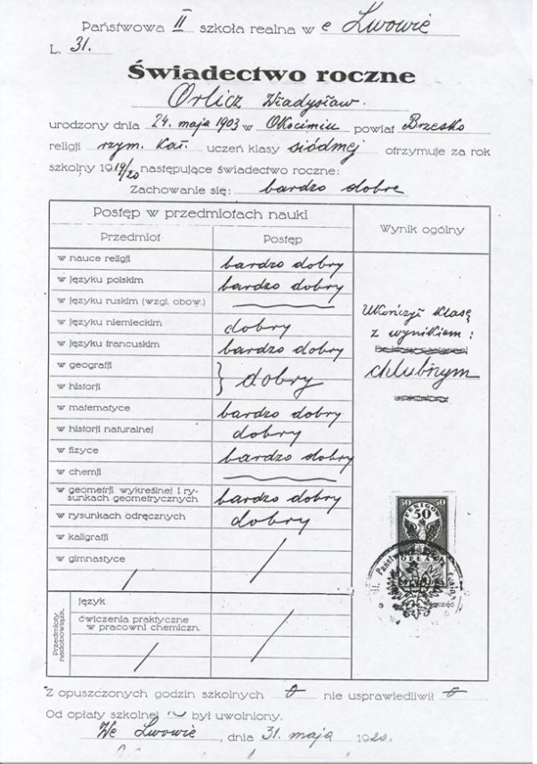

Władysław Orlicz
przez Kinga Gajek
Życiorys
Matematyka to swobodny tok myśli i pojęć, które matematyk, podobnie jak czyni
to muzyk z dźwiękami, a poeta ze słowami, składa w twierdzenia i teorie.
~ Władysław Orlicz
Młodość i pochodzenie
Władysław Orlicz urodził się 24 maja w 1903 roku w Okocimiu. Kiedy był dzieckiem, jego rodzina często zmieniała miejsce zamieszkania.
Edukacja
Uczęszczał do szkół w Tarnowie, morawskim Znojmie i we Lwowie. Władysław uczył się bardzo dobrze, maturę zdał z odznaczeniem w 1920 roku. Następnie podjął studia na Politechnice Lwowskiej. Ze względu na kłopoty z geometrią wykreślaną, po roku podjął decyzję, że zmieni uczelnie. Zaczął uczęszczać na Wydział Filozoficzny Uniwersytetu Jana Kazimierza we Lwowie. Uczyli go znani i cenieni matematycy tacy jak Stefan Banach i Hugo Steinhaus. W 1923 roku rozpoczął pracę jako demonstrator przy Katedrze Matematyki Wydziału Filozoficznego Uniwersytetu Lwowskiego. W 1925 roku ukończył studia i został młodszym asystentem przy I Katedrze Matematyki Uniwersytetu Jana Kazimierza.
Życie akademickie
W 1926 roku opublikował swoją pierwszą pracę naukową z zakresu teorii sumowalności w „Tohoku Mathematical Journal” (czasopismo naukowe). W 1928 obronił pracę doktorską zatytułowaną „Z teorii szeregów ortogonalnych”. W 1932 roku Orlicz pisząc jedną ze swoich prac opisał badanie przestrzeni funkcyjnych nazwanych później przestrzeniami Orlicza. W 1930 roku został starszym asystentem w Drugiej Katedrze Matematyki na Wydziale Mechanicznym Politechniki Lwowskiej. W 1934 roku uzyskał habilitacje pracą pt. „Z badań nad układami ortogonalnymi”.
Praca
W 1937 roku został profesorem nadzwyczajnym matematyki na Wydziale Matematyczno-Przyrodniczym Uniwersytetu Poznańskiego. Od końca 1939 roku do 1941 pracował jako profesor przy Katedrze Matematyki na Uniwersytecie Lwowskim. W latach 1941-1944 był nauczycielem w Publicznej Rzemieślniczej Szkole Zawodowej oraz prowadził tajne nauczanie gimnazjalne i akademickie. Zarabiał na swoje utrzymanie będąc, podobnie jak Stefan Banach, karmicielem wszy. Od 1944 do początków 1945 był kierownikiem Katedry Teorii Funkcji w Państwowym Uniwersytecie Lwowskim im. Iwana Franki. W 1961 został członkiem Polskiej Akademii Nauk. Od tego samego roku był jednym z redaktorów czasopisma „Studia Mathematica”. W 1970 roku przeszedł na emeryturę, a do tego czasu, kierował Katedrą Matematyki I na Wydziale Matematyki, Fizyki i Chemii Uniwersytetu Adama Mickiewicza.
Osiągnięcia
W 1974 roku otrzymał tytuł doktora honoris causa Uniwersytetu York w Toronto, cztery lata później Politechniki Poznańskiej, a w 1983 roku Uniwersytetu Adama Mickiewicza w Poznaniu. W latach 1977-1979 był prezesem Polskiego Towarzystwa Matematycznego. Jego dokonania zostały uhonorowane wieloma nagrodami. Otrzymał m.in. Medal Wacława Sierpińskiego (w 1979roku), nagrodę im. Stefana Banacha Polskiego Towarzystwa Matematycznego (w 1948 roku) i Medal im. Kopernika (w 1973 roku).
Śmierć
Władysław Orlicz poświęcił matematyce całe swoje życie, towarzyszyła mu ona nawet w momencie śmierci. Zmarł przy korekcie pracy pt. „Mathematica Japonica” 9 sierpnia 1990 roku w Poznaniu.